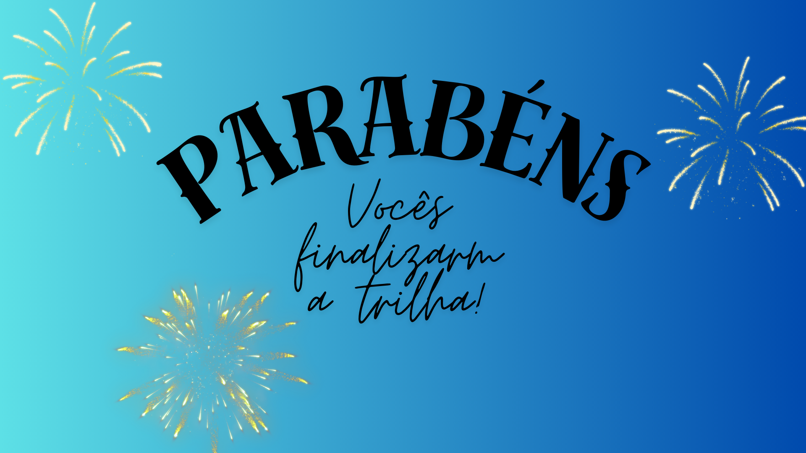

A aventura vai começar! Estejam atentos as dicas. Nas próximas telas vocês irão encontrar uma dica para encontrar o Qr Code. Assim que encontrarem, devem acessar com o auxílio da câmera do celular. Irá aparecer uma questão, após responder clique na resposta da tela. Caso erre, o jogo é reiniciado. Vence quem responder primeiro a sequência de 5 perguntas! Vamos lá...
Leciona a disciplina de Matemática e tem um bordão famoso na escola.
Qual a resposta da pergunta do QRCODE 1?
Pense melhor e responda novamente
Tem habilidades com as Linguagens, além de se comunicar com as mãos.
Qual a resposta da pergunta do QRCODE 2?
É baixinha, mas se não andar na linha terá uma puniçãozinha..
Qual a resposta da pergunta do QRCODE 3?
A próxima dica está com alguém que é antenado com o mundo da programação e acústico.
Qual a resposta da pergunta do QRCODE 4?
Ela ensina sobre o corpo humano, o sistema solar, os ecossistemas e as reações químicas.
Qual a resposta do QRCODE 5?
